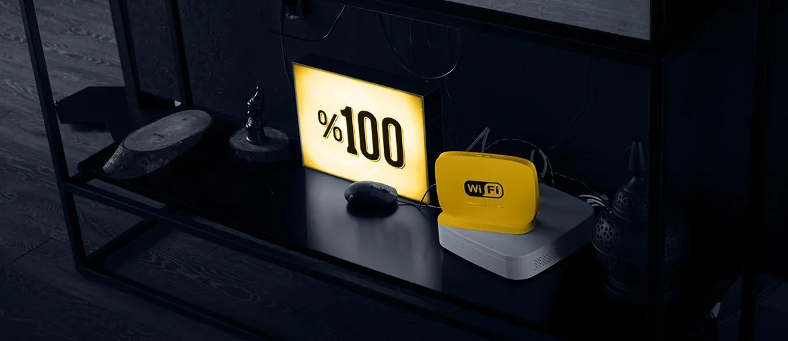

Map delivery queues
Find the StreamScape, ATAK, support portal, and firmware tasks slowing regional customer work.
Proposal brief for Silvus Technologies
Saw Silvus hiring HR leadership for Southern Europe, plus software and service roles. That usually means international demand is ahead of the delivery bench around StreamCaster, StreamScape, and ATAK support.
The signal says Silvus is building a larger international base. The hard part is not only hiring local HR. StreamCaster deals need fast support, clean firmware paths, and reliable StreamScape workflows. If that work waits for full local hiring, pilots can slow and sales engineers carry too much load.
We would place a dedicated remote squad under your product or engineering lead. The squad would support non-classified delivery work and move with weekly demos.
One technical lead, two C++ or Python engineers, one Java backend engineer, one QA engineer, and one DevOps engineer.
Find the StreamScape, ATAK, support portal, and firmware tasks slowing regional customer work.
Pick the safest non-classified workstream, then ship fixes through Silvus reviews and release rules.
Build tests for admin flows, plugin changes, support tools, and firmware update paths.
Prepare docs, service patterns, and handover notes for regional customer success teams.
These examples are from Elinext's public case study library. They match network products, telecom systems, and long-running engineering support.

Built a network device platform that reduced support costs after launch.
Read case study
Helped global users maintain complex infrastructure and react faster.
Read case study